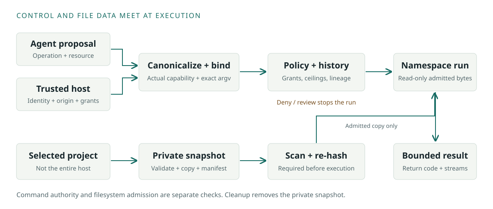

Experimental, open-source infrastructure. Built on Linux security mechanisms. Project-authored evidence, not independent certification.
INFORMATION ≠ AUTHORITYHOST-OWNED PERMISSION Every action. Explicit authority.
Validated source / 603365e / September 23, 2026
Tested through the execution boundary.
The integrated software candidate passed source, production-host and real KVM checks on one clean commit. Each result below is tied to that source and its pinned guest images.
489tests passed + 21 subtests5 / 5real KVM cases passed3bounded formal models passed2fixed tools through production dispatch
Release candidate validation on 603365e
Boundary
What we exercised
Result
Source and packaging
Full regression suite; Python 3.11/3.13 CI; wheel built from the source distribution and installed in a fresh environment
Passed
Host enforcement
Strict Linux prerequisites, signed policy and integrity, real cgroup placement and resource enforcement
Passed
Real KVM execution
Allowed request, denied request, timeout, cancellation and refusal with missing protection
5 passed
Authenticated audit
Existing live collector returned verified host and guest acknowledgements
Passed
Fixed-tool adapter
Inspect and checksum executed in the host sandbox; empty authority denied without execution
Passed
Controlled recovery
Worker exits, disposable collector outage/restart, interrupted checkpoint reconciliation and injected storage errors; fresh guest after cancellation
Passed within this scope
Hardware host integration
24 P-256 codec/verifier tests and 23 durable-gate tests with synthetic signatures; replay, request drift, counters and audit failure
Passed; included in the full suite
KB2040 prototype
Diagnostic firmware build and two C button state-machine simulations; live read-only USB status
Diagnostic only
Physical authorization
Secure-element key generation, signing, enrollment and witnessed YES/NO gestures
These are project-run checks. Controlled failures do not establish host power-loss recovery, persistent VM recovery, arbitrary-agent coverage or multi-day reliability. Website build results are recorded separately below.
BULL Hardware Authority / Physical Human Approval Token
One approval. One exact request.
Integrated in the host
The existing ApprovalGate verifies signed assertions bound to the request, session, nonce, action and policy. It consumes the request and advances the key counter atomically, records signed human denial, and rechecks policy and security domain before the effect. OpenSSH security-key verification remains available with presence and user-verification checks.
Current board: KB2040 only
BULL-DIAG-3 reports approval_available=false. There is no connected secure element, enrolled signing key or production signing transport. Live BOOT-button tests on September 23 returned YES for two clicks and NO for three clicks, each bound to a fresh diagnostic challenge. These responses are unsigned; the separate-button hold ceremony and secure signing remain unverified. The token cannot release credentials. No host YES/NO control or software-key fallback grants approval.
RP2040 firmware remains part of the prototype trust boundary. This is not a FIDO2-certified authenticator. Publishing, protected deletion and security-change executors are not supplied.
The boundary / At a glance
The model proposes. The host grants authority.
01 / UNTRUSTED INPUT
Agent / model
Documents. Messages. Repositories. A proposed action.
Conceptual architecture. Sensitive actions must be routed through the trusted integration; this illustration is not live telemetry.
Why this project exists
A convincing request is still just a request.
An agent may read a webpage, repository, message or another model’s output before deciding what to do next. Those inputs can be useful without being trustworthy enough to authorize a command, a credential request or a transfer of data.
BULL separates those two jobs. The agent proposes an action. Trusted host integration supplies identity, origin and permissions. BULL checks the proposal and, on its execution path, prepares a constrained environment rather than treating model output as permission.
The bulldog represents that boundary. The work is in the policy, dispatcher, filesystem checks, kernel restrictions and audit trail—not in asking a second model to promise that everything is safe.
01 / Information, authority and file data
Follow one request through the system.
The command path and the data path meet at execution. They are not interchangeable: having a copy of a file does not authorize a command, and approving a command does not admit every file on the host.

Control moves from the host-owned dispatcher to the runtime. File bytes arrive through a separate admitted snapshot. This is a conceptual sequence of the command-execution path, not a packet trace.
1
Receive a proposal, not self-issued authority
The proposal supplies an operation and resource. TrustedExecutionContext supplies the host’s actor identity, provenance and project boundary separately. The canonicalizer normalizes paths, rejects invalid traversal and derives the requested capability. A model’s claim about its own authority is not trusted context.
2
Bind the action and its command
Production dispatch rechecks trusted state and compares the executable and complete argument tuple with host authorization. A dispatcher-minted permit binds the action and command hashes to the production runtime call. These are controls inside a trusted host process, not protection against a hostile Python administrator.
3
Apply policy and behavioral history
The engine combines deterministic capability rules with the session guard. Security domains add parent ceilings, exact-host egress limits, lineage and shared root history. DENY stops execution; ESCALATE returns a review requirement. ALLOW and SANDBOX do not skip the remaining runtime gates.
4
Admit and inspect the bytes
The runtime copies the selected tree into private scratch space. Manifest and snapshot checks enforce file, byte, path, depth and time budgets; reject unsupported entries; and check source identity. The admitted snapshot is scanned, then re-hashed to detect changes between inspection and use.
5
Run against the admitted copy
The namespace runtime passes the snapshot with writable=False. Trusted bootstrap code is mounted separately at /bull_runtime; the project appears at /workspace. A policy outcome alone never certifies that the host has the required kernel support.
6
Return bounded output and clean up
The trusted caller receives an ExecutionResult containing the evaluation, return code and bounded standard streams. Snapshot cleanup runs in a finally block. There is no general automatic promotion of workload-modified files back into the original project.
The host supplies authority separately; the proposal is not a grant.
Workspace
Bytes from an admitted, bounded private copy
Not a live copy of every host directory, home folder or socket.
Trusted runtime
Security bootstrap and reviewed deployment code
Kept separate from agent-controlled project content.
Namespace results
Return code, stdout, stderr and structured status
Bounded process output, not a finished persistent guest export protocol.
HTTPS audit
Authenticated session, sequence and head-hash checkpoint
This transport omits the full local record; local logs still require access controls.
02 / Authority, lineage and behavioral containment
The agent can propose more. It cannot grant itself more.
BULL’s boundary is not only a syscall sandbox. Host-owned identity, provenance, capability ceilings, lineage, behavioral history and exact command binding decide whether a proposal can become an executable request.
HOST-ISSUED ROOT DOMAIN
One ceiling. Shared history.
Identity · provenance · capability and egress limits
Child agent A
Subset of parent authority
Child agent B
Distinct identity; shared root history
Hard or coordinated violations can freeze the root domain.
Authority controls above the sandbox
Control
What it does
Implementation
Canonical request context
Normalizes action and path semantics before policy evaluation. Model-supplied claims do not become trusted provenance or authority merely because they appear in a request.
Related agents share root-domain security history so splitting a suspicious sequence across sibling or descendant agents does not automatically reset the monitor. Hard or coordinated violations can freeze the root domain.
Process launch requires process-execution authority, and the executable/resource pair is bound to the approved request rather than inferred from a nearby filesystem permission.
Structured messages, registered handlers, approval-gated steps and host-owned canary inspection provide an integration layer for multiple cooperating agents. Adapters still have to route sensitive actions through the guard.
Workspace admission validates a bounded manifest, opens paths through hardened filesystem helpers, creates a private snapshot and runs the configured malware gate before the admitted copy is used. The goal is to avoid checking one tree and then executing a different live tree after a race or mutation.
The repository also contains adversary fingerprint, lure, registry and quarantine components plus agent-sentinel heuristics. They can support observation and response, but their presence is not proof that a deployment detects every hostile agent and they do not replace deterministic authorization or kernel enforcement.
The kernel enforces restrictions. BULL decides what to request.
The namespace backend is userspace orchestration around Linux. It shares the host kernel. The optional MicroVM route introduces a separate guest kernel; those are different deployment boundaries.
System runtime paths and /bull_runtime are mounted read-only. Production runtime execution supplies a read-only admitted workspace. Host homes, Docker sockets and user-session sockets are not deliberately exported by this launcher.
The namespace chroot does not mount the guest-style /proc and /sys trees described in the MicroVM section.
Privilege restriction
no_new_privs is applied before the workload. A narrow host-approved environment is used and startup, loader and credential-agent variables are stripped.
The production strict profile uses a default-deny libseccomp policy with an explicit userspace allowlist. The development compat profile has a different default-allow policy and deny set.
Landlock rules are intersected with the detected ABI’s handled rights. Runtime, project, temporary and device access are separated. Strict bootstrap fails rather than silently ignoring unavailable Landlock.
landlock_policy.py. Linux support must be verified on the actual deployment.
Resource controls
Process resource limits plus delegated cgroup v2 memory, process-count and CPU quota controls. The capture loop bounds each output stream independently.
The child installs restrictions and sends a bounded, nonce-bound bootstrap record. A parent reader validates the record before sending the acknowledgement that releases the child to exec. A missing, malformed or rejected record fails closed. This parent-acknowledged pre-execution gate is a host protocol, not independent hardware attestation.
Defaults in the source—not benchmark claims
Process defaults are 512 MiB address space, 30 CPU seconds, 64 processes, 256 open descriptors, 64 MiB single-file size and no core files. Standard output and standard error each have a separate 1 MiB capture limit. Existing tighter outer limits are not raised.
Workspace defaults are 50,000 files, 2 GiB total, 128 MiB per file, depth 32, a 4,096-byte path budget, and admission/copy/scan time budgets of 20/30/60 seconds. The scanner has its own tighter per-file and scan-size settings; these ceilings are not promises that every tree at the maximum will be admitted.
What the host has to provide
A Linux environment permitting the required unprivileged namespaces, libseccomp, Landlock support, mount/chroot tooling and a usable system Python. Production additionally validates signed policy and integrity state, audit transport, malware scanning, private scratch space and delegated cgroup configuration. Host provisioning is a deployment responsibility, not something this webpage performs.
One-shot real KVM integration demonstrated · Persistent VM reuse unfinished
BULL includes a hardware-only MicroVM launcher targeting Linux x86-64/KVM. It uses QEMU’s microvm machine, not a BULL-authored hypervisor. The guest kernel, root filesystem and reviewed engine are explicit local deployment inputs.
HOST / QEMU + KVM
SEPARATE GUEST LINUX KERNEL
Trusted BULL runtimeRestricted workload
Namespace · strict seccomp · Landlock
Read-only rootfsRead-only workspaceRead-only runtimeNo guest NIC
Session-bound authenticated control + audit channels
The default immutable-image route. Live read-only 9P export is a separate, explicitly enabled development mode—not the production image-isolation substitute.
Before QEMU starts
The deployment file is parsed as literal key/value data, never sourced as shell code. Approved workspace and runtime roots must come from that owner-controlled file. Selected exports must be within those roots, non-overlapping and not broad system or home-directory roots. The engine path is checked beneath the trusted runtime.
The launcher requires read/write access to /dev/kvm, a QEMU executable and explicit guest assets. It refuses software fallback. Defaults are 4,096 MiB, two virtual CPUs and a 3,600-second lifetime; accepted bounds are 4,096–65,536 MiB, 1–64 CPUs and 1–86,400 seconds. These are launch settings, not a measured persistent-session capacity.
Inside the guest
/dev/vda supplies the read-only root filesystem. /dev/vdb mounts at /workspace with read-only, no-journal-load, no-suid, no-device and no-exec options. /dev/vdc mounts read-only at /bull_runtime and permits the trusted engine entrypoint. Guest init creates private 128 MiB tmpfs mounts for /run and /tmp.
Guest PID 1 validates mountpoints and every engine path component, then replaces itself with the supplied executable under /bull_runtime. It does not choose an engine from project content. QEMU has no guest NIC, no monitor, minimal devices and its Linux process sandbox enabled.
Kernel and root filesystem build requirements
The image tooling creates the admitted ext4 guest input and the repository now documents versioned guest dependencies, including shell/runtime requirements and verified offline ClamAV databases used by the recorded integration milestone. Kernel, root filesystem, firmware and signature-database artifacts remain deployment-owned inputs kept outside Git; they must be pinned, hash-verified and rebuilt under the project’s governance rules.
The guest requires the configured shell and utilities, engine interpreter/libraries, ext4/devtmpfs/procfs/sysfs/tmpfs support and the virtio devices used by the launcher. The recorded local run verified the selected Linux x86-64/KVM combination; that does not certify arbitrary kernels, QEMU versions, CPU models or hardware.
Recorded KVM integration evidence
The September 23 run on 603365e passed all five real KVM cases using the existing external collector. It exercised the launcher, trusted guest supervisor, production dispatcher, strict namespace/seccomp/Landlock isolation and session-bound control/audit channels. A separate fresh guest also passed after cancellation. The original September 20, 2026 integration is retained as historical evidence. Persistent VM reuse, writable artifact promotion, hosted required KVM CI and independent review remain unfinished. ARM and macOS/HVF remain experimental and disabled.
Guest images, kernels and real deployment configuration stay outside the repository. The local-asset ignore rules and tracked-artifact checks remain in place.
05 / Secrets, outbound data and evidence
Separate channels. Separate permission checks.
Secret retrieval
The dispatcher authorizes the requested credential capability and resource before the secret broker is reached. Grants scope the permitted names, expiry, sandbox/domain identity and use count. Unix peer authentication and private socket ownership add a local transport boundary. A retrieved secret is still sensitive data: this is scoped retrieval, not a promise that a caller can never see the value.
Network egress
Brokered network requests require their own authority. Domain mode checks host-issued capability and host ceilings; legacy dispatch also requires an authorized request. The egress implementation checks addresses and pins the selected connection; HTTPS retains hostname verification. These are trusted-host integration components, not a claim that the default networkless guest already has a broker channel.
Audit transport is separate from workload networking. The direct HTTPS checkpoint uses include_record=False; local records are not automatically anonymous or safe to publish.
Local hash chainAuthenticated checkpointHTTPSCloudflare Worker + D1Authenticated acknowledgement
The direct checkpoint sends no prompts, credentials or full workload records. The external service and its keys remain part of the deployment trust boundary.
What the audit service receives
The local ledger records actions, evaluations and trusted events in a tamper-evident hash chain. The production HTTPS transport submits a bounded authenticated checkpoint with session, sequence and head hash. It forbids redirects and validates the acknowledgement’s MAC and exact checkpoint identity. The durable SQLite service implements bounded storage, conflict rejection and exact-last retry behavior. Deployment keys and the real HTTPS endpoint must be provisioned independently.
The September 23 candidate verified authenticated host and guest receipts from the existing live collector. The guest communicates through dedicated virtio control and audit channels without a guest NIC. Earlier disposable local TLS runs remain separate historical evidence. Production operators still have to supply and validate their own audit destination, keys and failure behavior. In an operator-run September 20 production-host exercise, BULL reconciled an interrupted checkpoint, submitted a fresh authenticated checkpoint to a Cloudflare Workers + D1 anchor, verified the acknowledgement, and finished with a valid local ledger. That is self-verification of one deployment, not an independent audit. Neither a hash chain nor a formal model protects against a malicious host administrator who controls the trusted deployment.
An operator-run benchmark on September 20, 2026 pinned BULL to source cd461ae05a09 and repeated eleven defensive regression classes three times each. All 33 selected runs passed, and the clean full regression suite also passed. These historical performance measurements were not rerun as part of the September 23 validation. They describe this corpus on one laptop.
Traversal rejection reached about 204k ops/s. Multi-agent figures include retained trace/canary state growth across 500 iterations.
Throughput caveat
Prompt-injection denial measured 15.02 ops/s and benign multi-agent allow measured 2.28 ops/s in the 500-iteration run, but those loops reused one MultiAgentSystem. Treat them as accumulated-state / long-session measurements, not fresh-state request throughput.
September 20, 2026 · Author-review manuscript · Not peer reviewed. Source snapshot: 01cd259. Its historical CI totals are separate from the current build.
The map below names every Python module and shell entrypoint in src/bulldog, grouped by responsibility. A file’s presence does not mean every production route uses it; auxiliary heuristics and compatibility backends are identified separately.
The website is a static engineering publication. CI runs the Python and formal checks, validates local page assets, builds the source inventory and publishes commit-specific evidence. It no longer packages a browser Python evaluator, hosted-model connection form, request editor or public testing console. Backend tests remain in the repository; they are not an interface presented to visitors.
BULL is not independently security audited or proven vulnerability-free. It does not establish protection against hardware attacks, a hostile kernel or hypervisor, or all adversarial behavior. Broad production deployment validation remains unfinished.
Implemented in source
Deterministic policy; host-owned request context; security-domain lineage and shared root-domain history; exact command binding; advisory monotonicity; admitted scan-to-execute snapshots; Linux namespace, seccomp and Landlock integration; cgroup/resource limits; hardened secret and egress broker components; authenticated audit transport; integrity and signed-policy checks; multi-agent orchestration components; adversary-observation components; MicroVM launcher/guest supervision; and the demonstrated one-shot real KVM production path.
Requires deployment integration
Supported host/kernel/QEMU/CPU combination; private directories; delegated cgroups; current offline scanner databases; signed policy and integrity material; production audit keys and endpoint; trusted firmware/images; and deployment-specific engine configuration. A host’s readiness and asset hashes must be checked on that host.
Not established by this site
Persistent MicroVM reuse; validated writable workspace or artifact export; hosted required KVM CI; hardware-backed attestation; protection from a hostile host or hypervisor; exhaustive adversarial coverage; broad independent production-collector validation; or an independent third-party security audit.
Latest GitHub publication checks
Build results are recorded in the deployment evidence file.
Regression totals describe the executed suite, not a count of all possible attacks. The local-host subset is included in the full suite. TLA+ checks concern bounded state-machine models, not the entire Python/Linux implementation or a hypervisor proof.
The live deployment results above are pinned to 603365e. The publication build identifies its own commit and source hashes. Kernel images, local deployment state and private keys stay outside the site.